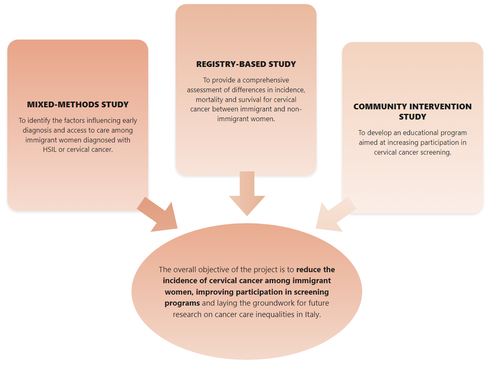

Conception de l'étude
Le projet DCIMIT comprend trois études complémentaires conçues pour offrir une vision globale des disparités liées au cancer du col de l'utérus parmi les populations immigrées en Italie
Conception et objectif du projet
Trois sous-études seront menées

JUSTIFICATION DU PROJET
Le cancer du col de l'utérus est le quatrième cancer le plus fréquent chez les femmes dans le monde. En Italie, on estime à 2 382 le nombre de nouveaux cas en 2024. Près de 99 % des cas sont causés par le papillomavirus humain (HPV), un virus très courant transmis principalement par contact sexuel. Dans la plupart des cas, l'infection disparaît d'elle-même, mais si elle persiste, elle peut évoluer en cancer. Heureusement, ce cancer est hautement évitable.
En Italie, le vaccin contre le HPV est gratuit pour les filles et les garçons âgés de 12 à 26 ans. Les femmes de 25 à 64 ans sont encouragées à participer aux programmes de dépistage par frottis ou test HPV. Cependant, l'accès à ces programmes est inégal : en 2021-2022, seules 77,7 % des femmes éligibles ont participé au dépistage, avec un pourcentage encore plus faible chez les femmes immigrées (72 %).
Les immigrés représentent plus de 8,6 % de la population résidente en Italie. De nombreuses femmes immigrées sont confrontées à des barrières linguistiques, à des difficultés financières et à une connaissance limitée du système de santé — des facteurs qui freinent leur participation au dépistage et au suivi, augmentant le risque de diagnostics tardifs et, par conséquent, de taux de mortalité plus élevés.
CONCEPTION DE L'ÉTUDE
Ce projet étudie les inégalités dans la prévention du cancer du col de l'utérus chez les femmes immigrées en Italie à travers trois sous-études complémentaires : une étude à méthodes mixtes, une étude basée sur les registres et une étude d'intervention communautaire. L'objectif est de réduire l'incidence du cancer du col de l'utérus chez les femmes immigrées, de favoriser une plus grande participation aux programmes de dépistage et de fournir des orientations utiles pour élaborer des stratégies de santé publique plus équitables et inclusives.
Le projet de recherche cherche à répondre à trois questions clés :
- Quels sont les principaux obstacles au diagnostic précoce du cancer du col de l'utérus chez les femmes immigrées ?
- Existe-t-il des différences d'incidence, de mortalité et de survie du cancer du col de l'utérus entre les femmes immigrées et les femmes italiennes ?
- Les interventions communautaires peuvent-elles aider les femmes immigrées à participer davantage aux programmes de dépistage du cancer du col de l'utérus ?